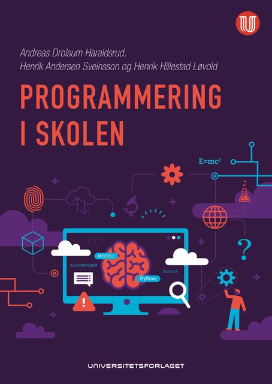

Programmering i skolen
Om programmering i skolen
Ressurser
Datasett
Installasjon av
Anaconda
Løsningsforslag
2. Tall og variabler
3. Kontrollstrukturer og funksjoner
4. Datastrukturer
5. Blokkprogrammering
6. Plotting og grafikk
7. Data og statistikk
12. Derivasjon og integrasjon
13. Dynamiske systemer
15. Objektorientert programmering
open issue
Index